לפניאחרי
לפניאחרי
מומחה לשיקום הפה
ניסיון שמאפשר לטפל גם במקרים המורכבים ביותר
מעל 15 שנות ניסיון, תכנון דיגיטלי מתקדם ושיקום פה מלא — עם דגש על תוצאה טבעית, מדויקת ומותאמת אישית.
15+ שנות ניסיון
מומחה לשיקום הפה
תכנון דיגיטלי
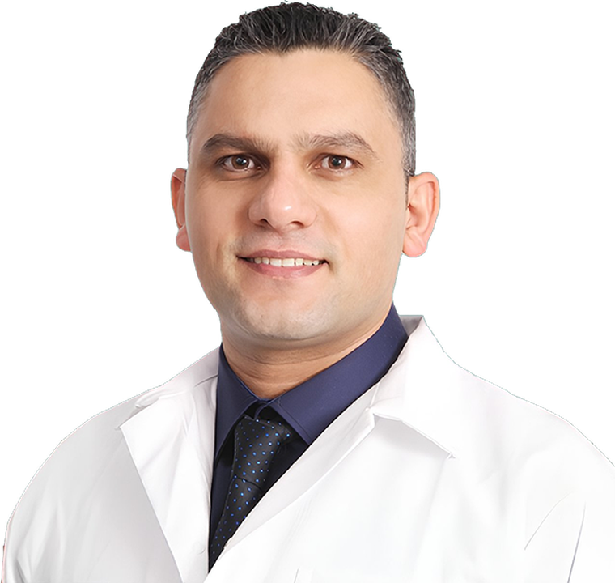
שיקום פה מלא
תכנון מדויק מהאבחון ועד למעקב
15+שנות ניסיון קליני
מומחהלשיקום הפה
דיגיטליאבחון ותכנון מתקדם
מקיףמקרים מורכבים ושיקום מלא
מקרה מורכב
כשצריך יותר מטיפול נקודתי
אבחון רחב, תכנון בשלבים והתייחסות משולבת לתפקוד, לסגר ולאסתטיקה.
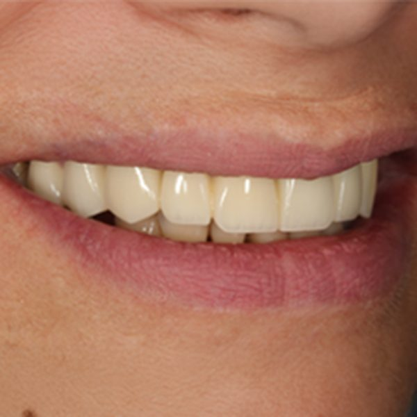
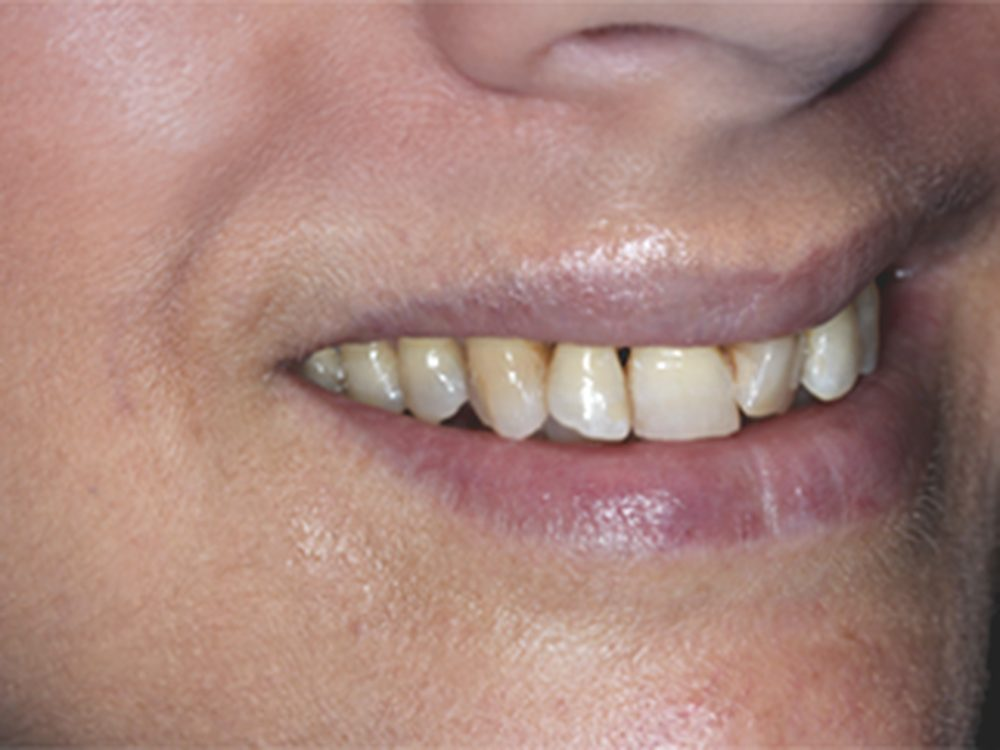
01
האבחון
הסתכלות על כל מערכת הלעיסה והחיוך, ולא רק על שן בודדת.
02
התכנון
בניית תוכנית מדורגת ומדויקת בהתאמה לצורכי המטופל.
03
בדיקת התאמה למקרה שלך ←
הביצוע
שילוב תפקוד, יציבות ואסתטיקה בתהליך מסודר ומבוקר.
גלריית עבודות
תוצאות אמיתיות של מטופלים
הזיזו את הידית בכל תמונה כדי להשוות בין המצב לפני ואחרי.
לפניאחרי
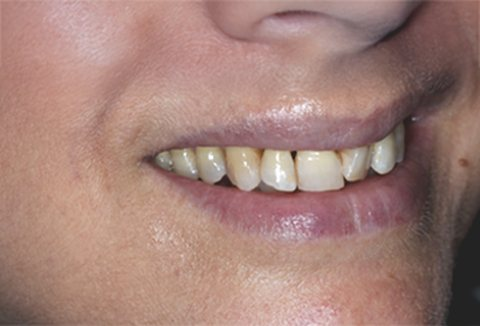
לפניאחריהתוצאות משתנות ממטופל למטופל ומצריכות הערכה אישית. התמונות מפורסמות בכפוף לאישור המטופלים.
הרופא בעבודה
מומחיות שרואים בכל שלב
תכנון, דיוק והקפדה על הפרטים — מהמעבדה ועד לבדיקת התוצאה.
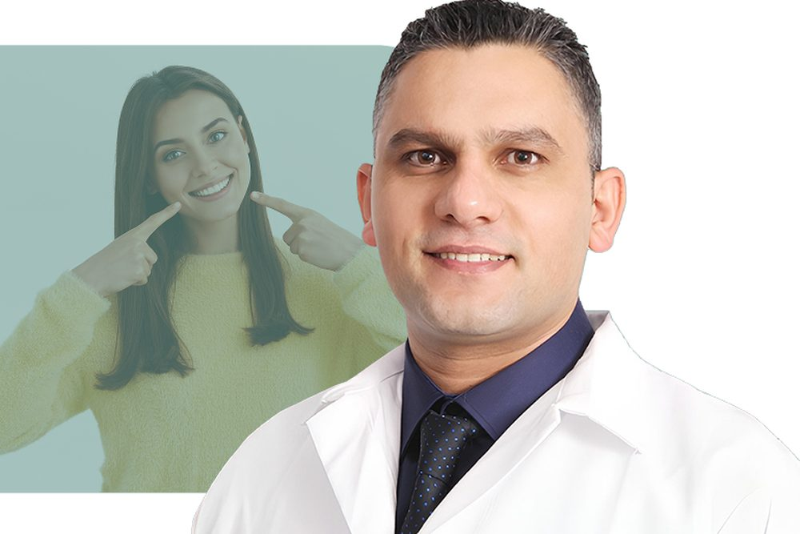
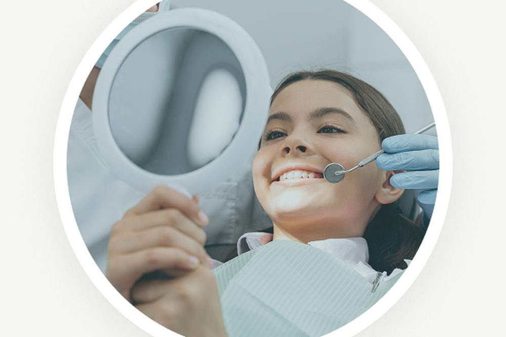
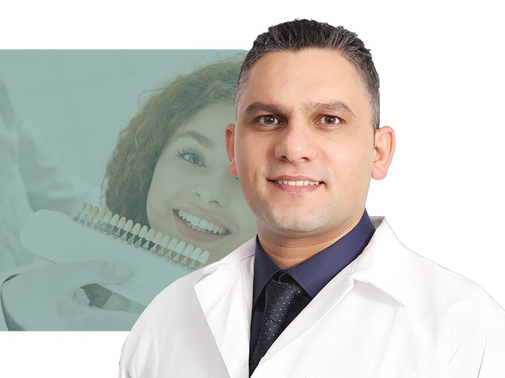
טיפולים
פתרון מקיף תחת קורת גג אחת
שיקום פה מלא
שחזור התפקוד והמראה בתוכנית כוללת ומתואמת.
השתלות שיניים
תכנון מדויק וארוך טווח בהתאמה למצב הקליני.
ציפויים ואסתטיקה
שיפור עדין ומבוקר לתוצאה טבעית והרמונית.
כתרים וגשרים
עיצוב דיגיטלי וחומרים איכותיים בהתאמה אישית.
הלבנת שיניים
התאמת גוון מבוקרת לשיפור רענן ומציאותי.
טיפולים משמרים
טיפולי שורש, סתימות וניקוי לשמירה על הבריאות.
פעילות מקצועית ואקדמית
ניסיון קליני שמגובה בלמידה, מחקר והוראה
ד״ר תחסין יונס הוא בוגר האוניברסיטה העברית–הדסה עין כרם ומומחה לשיקום הפה, עם פעילות אקדמית ומחקרית בישראל ובקנדה.
- מומחה לשיקום הפה — הדסה עין כרם
- הצגת עבודות בכנסים מקצועיים בארץ ובעולם
- הוראה והדרכה אקדמית בישראל ובקנדה
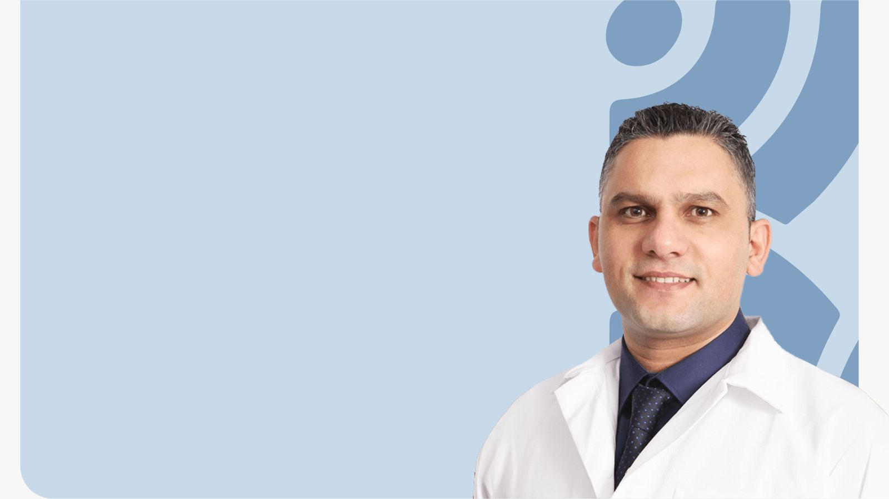
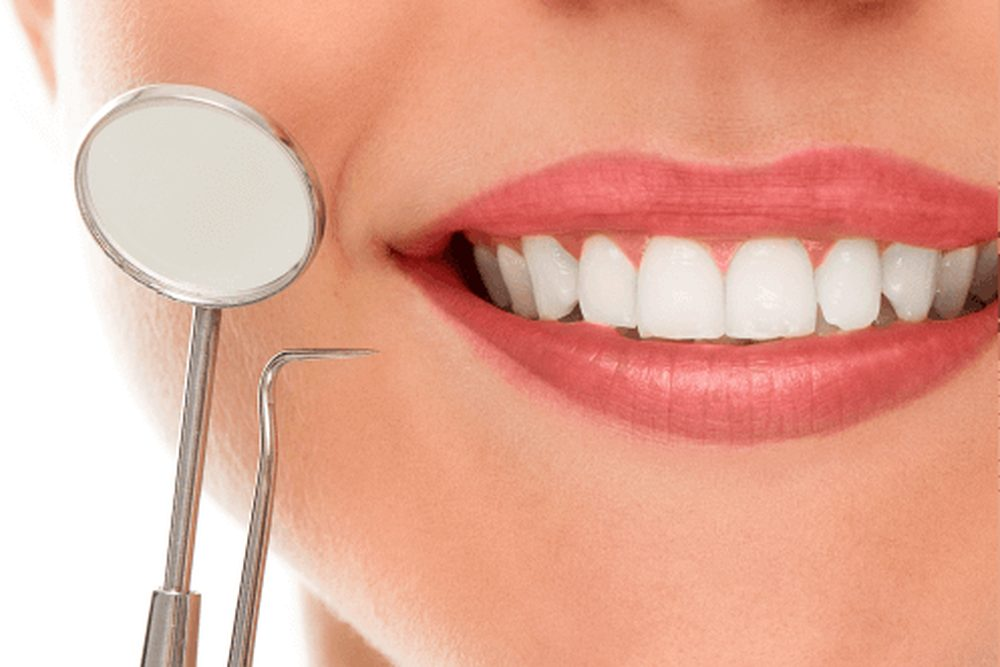
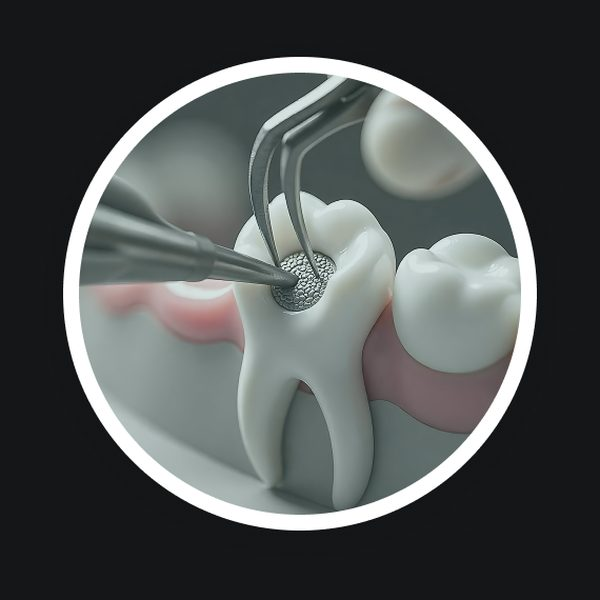
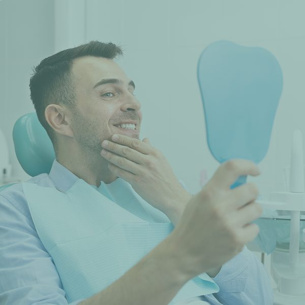
התהליך והטכנולוגיה
מהאבחון ועד לתוצאה
ייעוץ
הבנת הצרכים והציפיות.
אבחון דיגיטלי
מידע מדויק לפני הטיפול.
תוכנית אישית
אפשרויות ברורות ושלבים מתואמים.
ביצוע ומעקב
ביצוע מדויק ומעקב לאורך זמן.
חוות דעת
ביטחון מתחיל בהרגשה שאתם בידיים הנכונות
“מהבדיקה הראשונה ידעתי שאני בידיים טובות. ד״ר יונס מסביר הכול, מציג את הפה בתלת־ממד ומראה בדיוק מה צריך לעשות.”
“עברתי הלבנה, שתלים וטיפולים נוספים והתוצאות מצוינות. מקצועי, סבלני ומעניק יחס אישי שמשרה ביטחון מלא.”
“מטופל של ד״ר יונס כבר שנים, וגם כל המשפחה. השתלים והכתרים מחזיקים מצוין לאורך זמן והשירות תמיד ברמה גבוהה.”
קביעת ייעוץ
בואו נבין מה הפתרון הנכון עבורכם
השאירו פרטים וצוות המרפאה יחזור אליכם לתיאום פגישת ייעוץ.